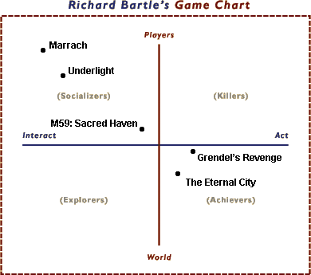

|
Social Gaming Interactions, Part One: A History of Formby Shannon Appelcline It's been thirty years now that we've had multiplayer games. I'm not going to try and pinpoint what the first multiplayer game was, because that's not really the point this time around, but I think it does predate the Internet. Just go back to your old Atari VCS/2600 (1977) and you'll doubtless recall one of your first games being Pong or Tank, where you could compete against a single opponent--and there were standup arcade versions of the same five years before home gaming consoles ever appeared. In arcades, and on home televisions, you fought against opponents on what were effectively super-local networks. And that was just the start. Even before worldwide networks became a big deal you could login to BBSes via modem or host your own games on local 10-base-T or 10-base-2 nets. Now we're ten years past the introduction of the newest thing--the Internet--but we'd do well to remember that the concept of players competing via a computer medium are three times that old in a number of different forms. You'd think we'd have gotten it right by now. But the truth is we've barely scratched the surface. Plotting Out the Possibilities: Non-Social RolesBy now you've probably got some idea of what I mean when I talk about "social gaming interaction". As likely as not, you think I'm talking about beating up an opponent, because that's the form taken by the early examples that I provided. Or, perhaps, you're instead thinking about some interactive method you prefer, whether it be one highlighted by MUDs, MUSHes, or MMORPGs. However, I suspect that your definition of "social gaming interaction" is by far a small subset of the overall concept that I'm considering. We'll get to that, because expanding out that small definition, whatever yours happens to be, is exactly the purpose of this series of articles. As I've discussed previously in this column (see #14, #25, and #42) there's a pivotal article by Richard Bartle called Hearts, Clubs, Diamonds, Spades which divides players up into four main categories: explorers, achievers, socializers, and killers. It does this by positioning players on two axes: act vs. interact and player vs. world (e.g., some players "act with the world", some "interact with players", etc). You can see an example of this diagram at right, with Skotos roleplaying games arbitrarily entered upon it. Personally I prefer to see the player/world axis as social/solitary, and I think that distinction offers some insight into gaming interactions. By considering that vertical axis to run from social to solitary, it becomes more obvious that two of Bartle's traditional player types aren't about social gaming interactions at all. Explorers, who interact with the world, busy themselves finding all the nooks and crannies of a game; they don't care about other players. By the same tokens true achievers are exclusively concerned with acting upon the world by making themselves better; other players are ultimately only a tool for doing so. That the majority of MMORPGs, MUDs, and other multiplayer games ultimately support achiever players over socializers, or even killers, I think begins to outline how poorly we understand--and support--true social interactions in today's multiplayer games. Plotting Out the Possibilities: Social RolesHowever, just as two of Bartle's player types point us away from social gaming interactions, two of them point us toward them: socializers and killers. Together, I think these two player types form a spectrum for how socialization can occur within multiplayer games, from totally cooperative interactions to the totally competitive ones. Bartle's two social player types, however, do miss one other type of important player interaction, which is game-agnostic behavior: social interaction which is neither cooperative or competitive. Or, to put it another way, situations where where the game acts as a vehicle for more freeform socialization, whether it be chat or group storytelling. Clearly, freeform interaction is somewhere nearer cooperation on the socialization spectrum, but unlike the other extremes it's ungoaled (and perhaps this all warrants a new diagram for multiplayer social interactions, with one axis running from "cooperation" to "competition" and the other from "freeform" to "goal-oriented", though the idea of non-goal-oriented competition slightly boggles me). Ultimately, these three types of socialization--cooperation, competition, and freeform--will point us to how to expand social interaction within online games. Examples of the CategoriesThough I believe there to be a real dearth of types of social interaction in current multiplayer games, at the same time I do believe that we've seen all three of my broad categories with extant offerings. It's the depth that we've looked into each of these social categories that is severely lacking. We've just barely touched upon the world of social interaction and it's really time we dug deeper. However, before I do so, in the next couple of articles, I'd first like to take a look at what our idea of gaming social interaction has been thus far, in the first 30 years of multiplayer games. Freeform Socialization. Sadly, this is the extent of social interaction allowed for in most multiplayer games. We slap a chatline into a game. Then we spend as much time making it look nice--by allowing for colored text, by making a library of hundreds of smileys, by putting it in cute little word balloons on the screen, or by using cool fonts--as we do considering how the chat lets people interact. And, sometimes, designers don't even go that far; some chats just seems like an afterthought, grossly slapped down on top of the millions of polygons which make up the true heart of the game (for those designers). Games that have gone beyond this level of freeform social interaction have mostly done it through social engineering: the socialization emerged a part of the culture rather than the game itself. The earliest TinyMUDs (1989) are perhaps some of the best examples, because they created societies of storytelling and human interaction pretty much out of whole cloth. In our own Castle Marrach here at Skotos we do have elements of competitive and cooperative play, but ultimately a lot of the social interaction comes down to freeform desires to tell meaningful stories together. Sims Online is an example of a more mass-market application of the same concepts. Perhaps because of its very nature freeform interaction will never advance beyond these chaotic interactions, but in the next couple of articles, we'll see what ideas for expansion spring to mind. Competitive Socialization. This is, I think, the richest form of interaction possible in multiplayer games, yet ironically it's more often been seen as a problem than as a potential virtue. Most players see competitive players in the same way that Bartle did, as killers. And that name connotes visions of marauders, there solely to ruin the game. To be honest, killers did nearly ruin many early games. I played Diablo online exactly once, before I got frustrated by cheating killers pretty much overrunning the game. Ultima Online almost went under in its early days because of the same issue (minus the extensive cheating). In more recent years some multiplayer game designers have tried to channel these same "killer" players. Dark Age of Camelot is, perhaps, the best example of controlled player competition, with specific areas set aside for inter-player combat. Other games like Shadowbane are attempting to market directly to "killers". However, I think this all misses much of the point, because direct interplayer conflict isn't the only way for players to interactively compete. We've seen the barest glimmerings of other forms of competition in any game that develops a player-driven economy based on player skills and crafts--because theoretically those players are competing capitalistically. But it really hasn't been explored beyond that. As you may recall, I spent much of the start of this year looking into tabletop strategy games. Tabletop designers have spent generations perfecting ideas for controlled player competition. I think a lot can be learned from them as to how multiplayer computer games should be expanding. Cooperative Socialization. And finally we come to cooperative socialization, by which I really mean players working together against the system. It was the heart of classic arcade games like Gauntlet, where players together fought the ravening hordes of the dungeons. Players grouping together was also an important basis of many early MUDs--and to various extents MMORPGs too. Some work has been done to try and make these groupings seem natural, via group-chats, automatic division of experience, etc. However I again think that this is a very narrow route for investigating cooperative socialization. It's all about combat and it doesn't have to be. One of the few games that has really tried to push this envelope is Asheron's Call with its ideas for feudal structures (which unfortunately are more often experience machines than true social groupings, but that's a problem with Asheron's implementation, as opposed to the general concept). Unfortunately it's a bit harder to find good examples of cooperative socialization in the wider world. Very few tabletop games involve the players working against the system, with standouts like Arkham Horror and Reiner Knizia's Lord of the Rings being fairly rare exceptions. However, we can fall back to another categorization: team play. The archaic bidding rules of Bridge provide an interesting look into how players can work together with limited information; team play elements of other (largely card) games may provide some other insights. Digging Deeper ...Consider this all a description of the problem and an outline of solutions. Quite simply, social interactions within current multiplayer games are a mere shadow of what they could be. But, by understanding the main categories that can be expanded upon--freeform, cooperation, and competition--we may discover notable areas for expansion. Next column I'm going to look at the various well-documented competitive possibilities that haven't yet made it into the multiplayer computer genre, and then the column after that I'm going to touch upon cooperation and freeform to the extent that they're understood. Before I sign off, a thanks to Christopher Allen, who got me started on this route, and who provided copious notes that I expect to be drawing on next time. I'll see you in 14, and in the meantime Happy Thanksgiving (unless you're a turkey). [ <— #135: Anatomy of a Game: Survivor Twists | #137: Social Gaming Interactions, Part Two: Competition —> ] Miniseries ...
|